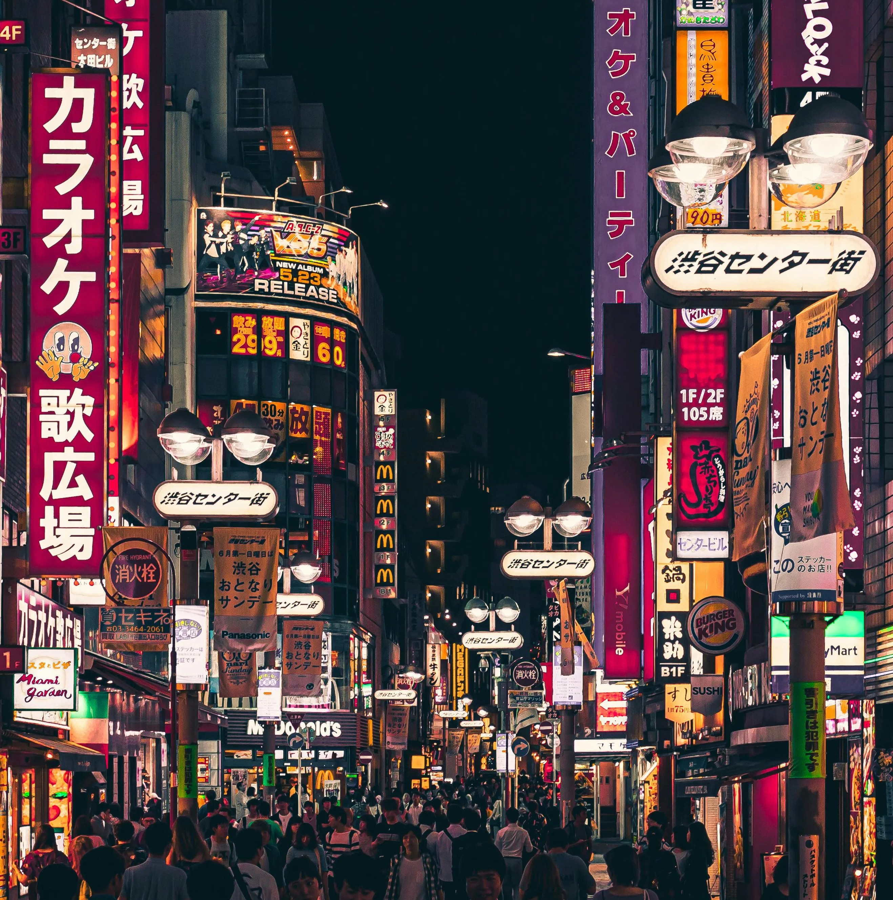
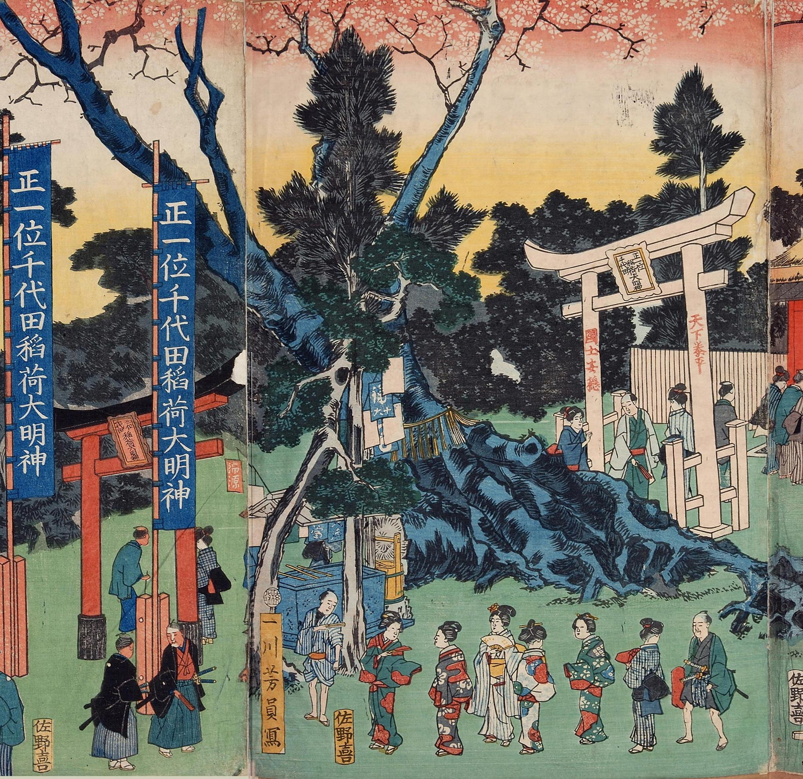
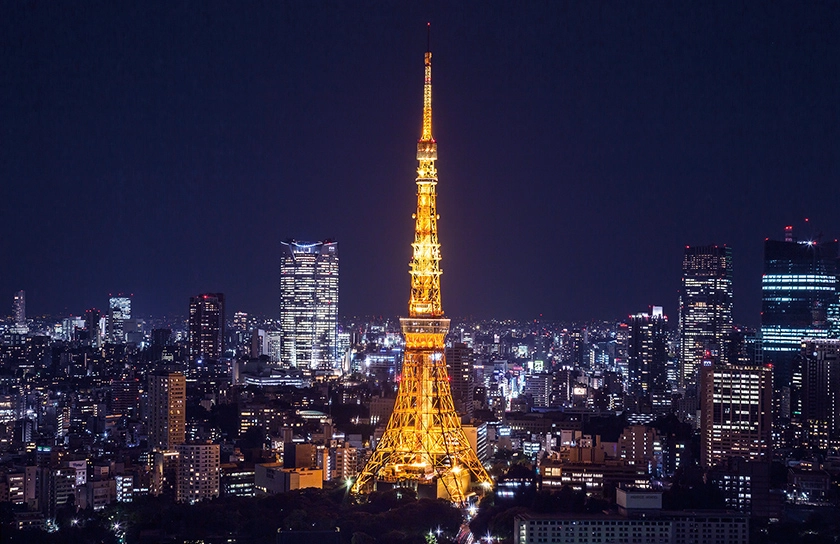
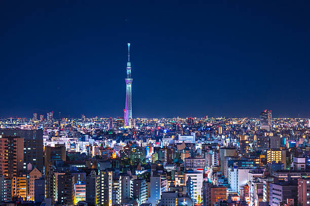
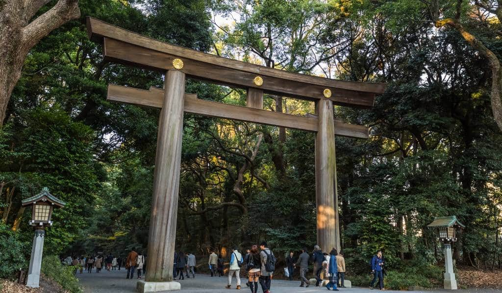
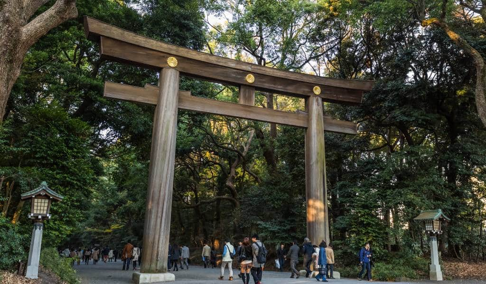
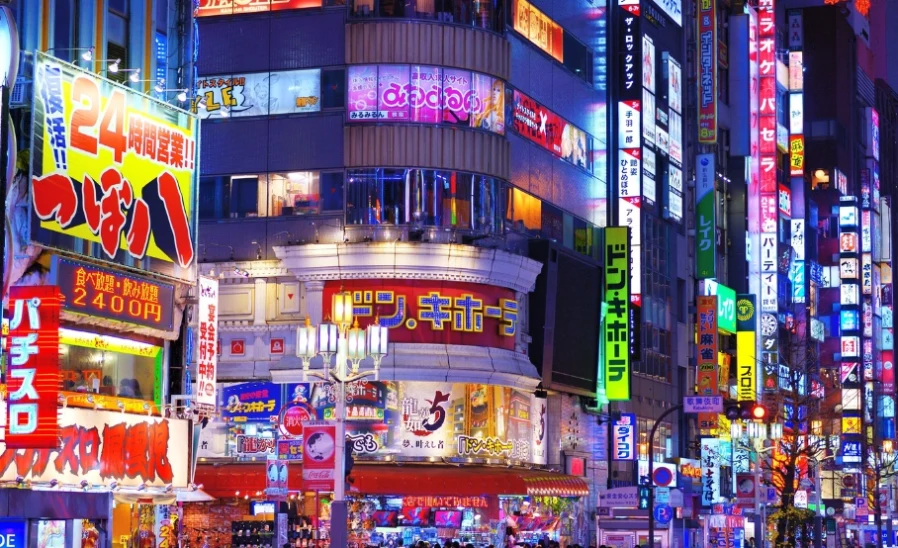
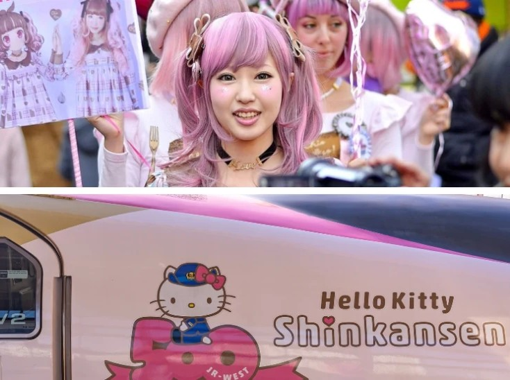
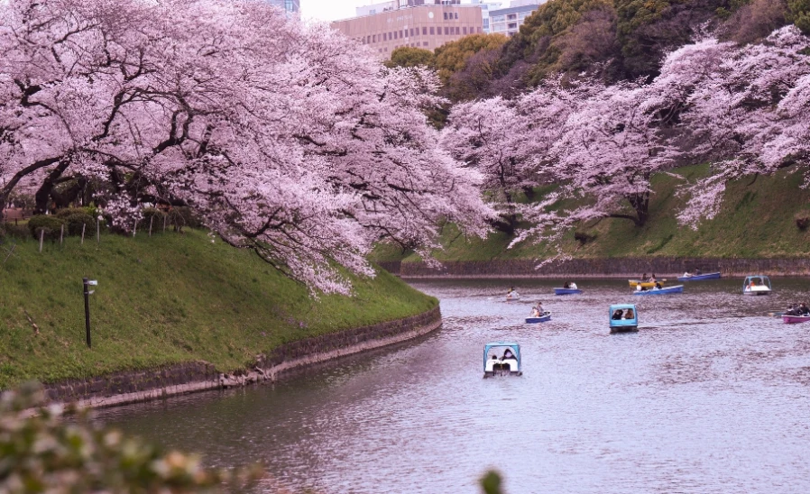
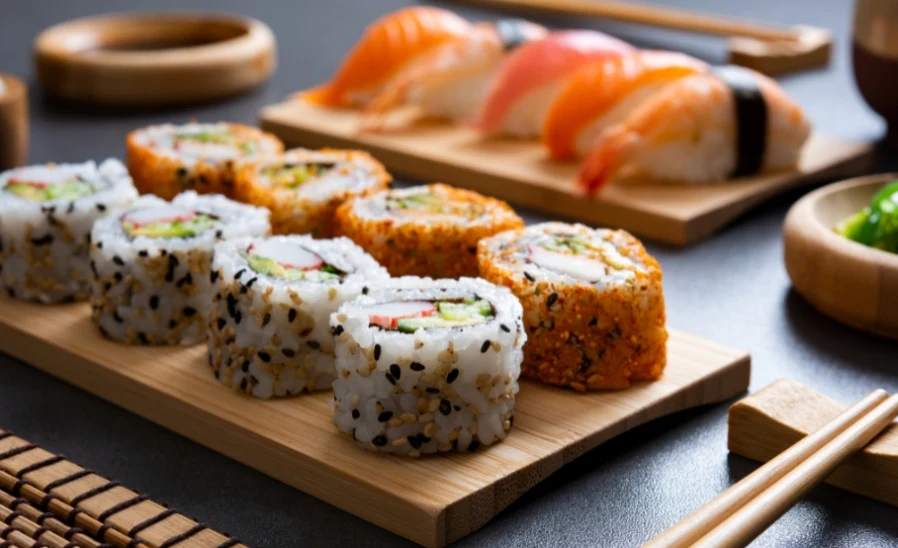

Tokyo: The Heart of Modern Japan

Tokyo, Japan’s bustling capital, is a global metropolis blending modernity and tradition. It’s home to towering skyscrapers like Tokyo Skytree, cutting-edge technology in areas like Akihabara, and vibrant pop culture, including anime and fashion. Yet, it preserves history with ancient temples like Sensō-ji, traditional festivals, and serene gardens.
What’s great about Tokyo is its dynamic energy, efficient public transport, world-class food, and safe, clean streets. The city offers endless attractions—shopping, museums, and nightlife—while seamlessly mixing old customs with futuristic innovation, making it a captivating destination that appeals to all who visit.
History: Edo Period to Modern Era

Tokyo’s history spans from the Edo Period to the modern era, blending old and new vividly. During the Edo Period (1603-1868), Edo (old Tokyo) was a bustling samurai city with temples, gardens, and strict traditions. It grew as Japan’s political center, focusing on trade and culture.
After the Meiji Restoration in 1868, Edo became Tokyo, embracing modernization with railroads, schools, and western influences. Today, Tokyo mixes skyscrapers like Tokyo Skytree with historic sites like Sensō-ji.
Old customs like sumo and tea ceremonies coexist with tech hubs and pop culture, making Tokyo a city where history and innovation thrive together.
Culture: Tradition and Modern
Tokyo blends modern and traditional culture vibrantly. Modern Tokyo features skyscrapers like Tokyo Skytree, tech hubs like Akihabara, and pop culture like anime and fashion. Traditional Tokyo preserves history with temples like Sensō-ji, tea ceremonies, and geisha performances in Asakusa.
Festivals such as cherry blossom viewing and sumo tournaments celebrate old customs. Old and new coexist—ancient shrines next to futuristic buildings, kimonos alongside trendy clothes. This mix of calm tradition and lively innovation makes Tokyo unique, attracting visitors who love both Japan’s rich past and its high-tech present, all in one exciting city.
Some of the most
Popular animes in Japan!
Top 4 Attractions to Visit


 

Why Should YOU Visit Tokyo?




Tokyo is a must-visit destination for its unique blend of modern and traditional attractions. Experience cutting-edge technology, towering skyscrapers like Tokyo Skytree, and vibrant pop culture in districts like Akihabara. Discover history at ancient temples like Sensō-ji, enjoy traditional festivals such as cherry blossom viewing, and savor authentic Japanese cuisine.
The city offers endless shopping, world-class museums, and efficient public transport. Whether you’re fascinated by futuristic innovation or rich cultural heritage, Tokyo’s dynamic energy, safety, and hospitality make it an unforgettable destination for travelers seeking both excitement and tradition.